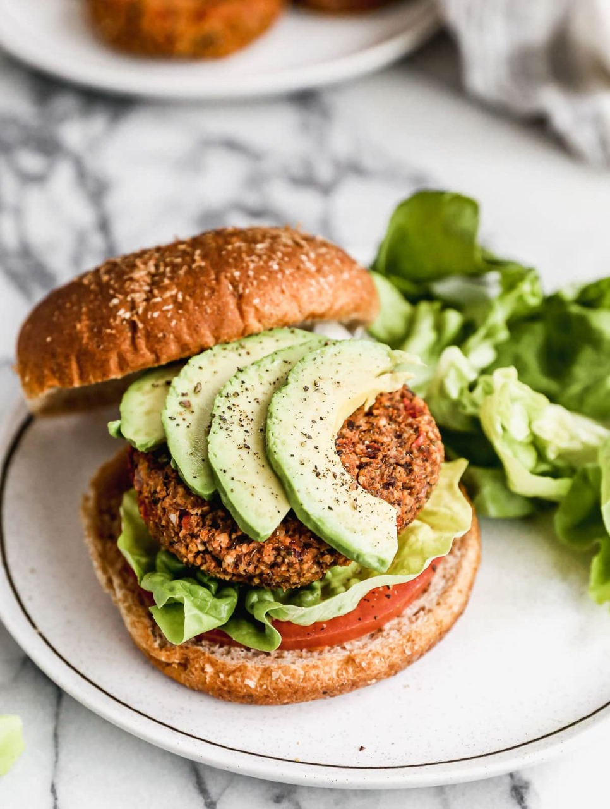

Veg Burger Rate my recipe : Prep Time : 30mins Cooking Time : 1hour 30mins  Veggie burgers are a healthy and delicious alternative to traditional meat burgers. Packed with vegetables and flavor, they're perfect for a meatless meal.-Anika Ingredients 2 cups boiled vegetables 1 cup bread crumbs 1/4 tsp sauses 1 pack buns 1 tsp butter As Needed salt You currently have in your basket Directions In a food processor, pulse chickpeas until coarsely chopped. Transfer to a bowl. Add vegetable broth, breadcrumbs, onion, carrot, garlic, cumin, paprika, salt, and pepper to the bowl. Mix until well combined. Form the mixture into patties. Heat olive oil in a skillet over medium heat. Cook patties for 3-4 minutes on each side, until golden brown and heated through. Toast burger buns and assemble burgers with lettuce, tomato, onion slices, and your favorite condiments. Serve hot and enjoy! How did your Burger go? Your Name: Your Comment: Add Comment